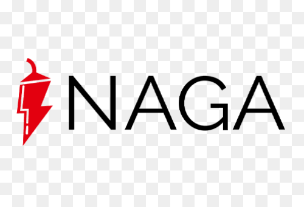

Bonus NAGA 25$–100$
Apri NAGA dall'invito, verifica i documenti e deposita 110€ su un account Real Shares (DMA) o Real Stocks. Ricevi un bonus random tra 25$ e 100$. Mantieni il deposito fino alla ricezione del bonus, poi dopo 45 giorni preleva bonus più deposito.
Come ottenere il bonus NAGA: procedura passo-passo
- Apri NAGA dall'invito e crea un nuovo account.
- Completa la verifica dei documenti (KYC).
- Appena verificato, fai un deposito di 110€ su un account Real Shares (DMA) o Real Stocks.
- Mantieni il deposito fino alla ricezione del bonus. Se prelevi l'intero deposito il bonus viene revocato.
- Passati 45 giorni, preleva il bonus più il deposito.
✅ Suggerimenti
- Deposita su un account Real Shares (DMA) o Real Stocks: sono quelli validi per la promo.
- Il bonus è un importo random tra 25$ e 100$: non è un valore fisso.
- Lascia il deposito sull'account fino a quando ricevi il bonus, poi attendi i 45 giorni per prelevare tutto.
❌ Da evitare
- Prelevare l'intero deposito prima di aver ricevuto il bonus: il bonus viene revocato
- Depositare su un account diverso da Real Shares (DMA) o Real Stocks
- Prelevare prima dei 45 giorni
- Ricorda: NAGA è una piattaforma di trading, i prodotti comportano rischi
Conviene il bonus NAGA?
Bonus random tra 25$ e 100$ a fronte di un deposito di 110€ su un account Real Shares (DMA) o Real Stocks. Il deposito non è una spesa: resta tuo e lo riprendi dopo 45 giorni insieme al bonus. Il punto di attenzione principale è il vincolo: il deposito va mantenuto fino alla ricezione del bonus, e prelevarlo per intero prima lo revoca. NAGA è inoltre una piattaforma di trading CFD/azioni: i prodotti finanziari comportano rischi.
👍 Pro
- Il deposito è recuperabile: lo riprendi dopo 45 giorni
- Bonus potenzialmente alto (fino a 100$)
- Procedura lineare: verifica, deposito, attesa
👎 Contro
- Deposito richiesto piuttosto alto (110€)
- Importo del bonus non fisso (random 25$–100$)
- Vincolo di 45 giorni prima di poter prelevare
- Piattaforma di trading: prodotti con rischio, valuta bene prima di operare
Il bonus è erogato direttamente da NAGA. GoatLink non chiede alcun pagamento. I prodotti di trading comportano rischi.
Domande frequenti sul bonus NAGA
Quanto vale il bonus di NAGA?
Su quale account devo depositare?
Posso prelevare subito il deposito?
Quando posso prelevare tutto?
Ultimo aggiornamento: